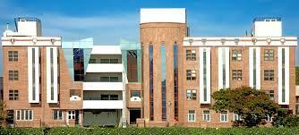

ABOUT LIPSLucky Institute of Professional Studies is established by the Lucky Shikshan Sansthan, Jodhpur which has continuously been in the field of education for the last 43 years. The institute is running under the kind and able guidance of its Chairman Sh. S.N. Kachhwaha is an educationalist and a great visionary having a long association with the education field. Lucky Institute of Professional Studies is emerging as one of the leading Institutions on the educational horizon of northwest India. It has made a modest beginning with a three-year postgraduate program in Master of Computer Application in 2001. The college is approved by the All India Council of Technical Education (AICTE), New Delhi & Department of M.H.R.D Govt. of India, Delhi and affiliated with Jai Narain Vyas University, Jodhpur & Rajasthan Technical University, Kota. |
 |